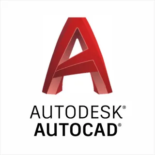
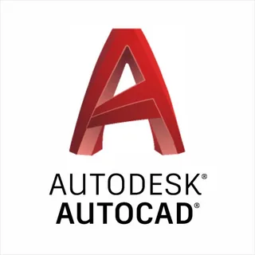
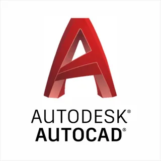

Home
Mobile development, JAVA, C, and AutoCAD
 

Mobile development, JAVA, C, and AutoCAD

I was born in Shahrixon, Andijon region, Uzbekistan, on March 9, 2003. My early years were filled with curiosity and excitement, especially during the beautiful spring mornings. At the age of seven, in 2010, I started my journey as a first-grade student, and it was the beginning of the most beautiful and unforgettable days of my life. With a unique interest, I learned various subjects, developed skills in writing, and made friends. Throughout my school years, I stood alongside classmates and friends, becoming one of the top students in the class and school.
After completing school, I entered Andijon State University. Later, I had the opportunity to study at the Korea International University, where I participated in an Olympiad and became a Grand Prize winner. Since then, I am currently a student at Korea International University.
I learned C, JAVA, MOBILE during my university years and worked on AutoCAD. Currently, I am learning Python and Photoshop.


After completing my second year in 2023, I started my first official job at "Bunyodkor Metal Montaj" MJCH. It was not an easy job, but I reported on the installation work of the "ADM JIZZAKH" Kia plant construction in Jizzax region as an employee for three months.


My favorite hobbies include listening to music, reading books, walking, and having interesting conversations with friends. All of these activities contribute to my well-being, and taking a break is essential, not just for work but for life in general.